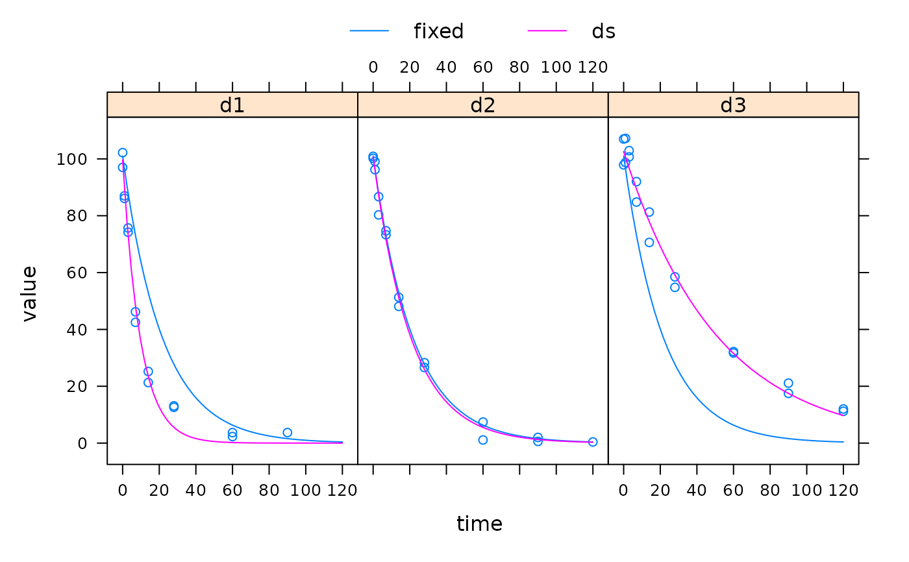
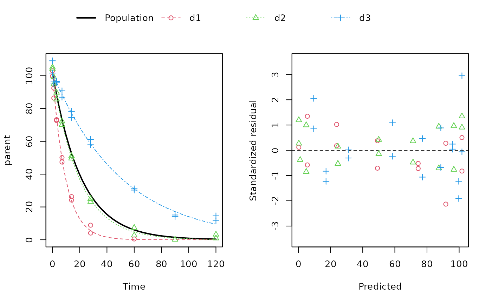

These functions facilitate setting up a nonlinear mixed effects model for
an mmkin row object. An mmkin row object is essentially a list of mkinfit
objects that have been obtained by fitting the same model to a list of
datasets. They are used internally by the nlme.mmkin() method.
nlme_function(object) mean_degparms(object, random = FALSE) nlme_data(object)
| object | An mmkin row object containing several fits of the same model to different datasets |
|---|---|
| random | Should a list with fixed and random effects be returned? |
A function that can be used with nlme
If random is FALSE (default), a named vector containing mean values of the fitted degradation model parameters. If random is TRUE, a list with fixed and random effects, in the format required by the start argument of nlme for the case of a single grouping variable ds.
A groupedData object
sampling_times = c(0, 1, 3, 7, 14, 28, 60, 90, 120) m_SFO <- mkinmod(parent = mkinsub("SFO")) d_SFO_1 <- mkinpredict(m_SFO, c(k_parent = 0.1), c(parent = 98), sampling_times) d_SFO_1_long <- mkin_wide_to_long(d_SFO_1, time = "time") d_SFO_2 <- mkinpredict(m_SFO, c(k_parent = 0.05), c(parent = 102), sampling_times) d_SFO_2_long <- mkin_wide_to_long(d_SFO_2, time = "time") d_SFO_3 <- mkinpredict(m_SFO, c(k_parent = 0.02), c(parent = 103), sampling_times) d_SFO_3_long <- mkin_wide_to_long(d_SFO_3, time = "time") d1 <- add_err(d_SFO_1, function(value) 3, n = 1) d2 <- add_err(d_SFO_2, function(value) 2, n = 1) d3 <- add_err(d_SFO_3, function(value) 4, n = 1) ds <- c(d1 = d1, d2 = d2, d3 = d3) f <- mmkin("SFO", ds, cores = 1, quiet = TRUE) mean_dp <- mean_degparms(f) grouped_data <- nlme_data(f) nlme_f <- nlme_function(f) # These assignments are necessary for these objects to be # visible to nlme and augPred when evaluation is done by # pkgdown to generated the html docs. assign("nlme_f", nlme_f, globalenv()) assign("grouped_data", grouped_data, globalenv()) library(nlme) m_nlme <- nlme(value ~ nlme_f(name, time, parent_0, log_k_parent_sink), data = grouped_data, fixed = parent_0 + log_k_parent_sink ~ 1, random = pdDiag(parent_0 + log_k_parent_sink ~ 1), start = mean_dp) summary(m_nlme)#> Nonlinear mixed-effects model fit by maximum likelihood #> Model: value ~ nlme_f(name, time, parent_0, log_k_parent_sink) #> Data: grouped_data #> AIC BIC logLik #> 252.7798 262.1358 -121.3899 #> #> Random effects: #> Formula: list(parent_0 ~ 1, log_k_parent_sink ~ 1) #> Level: ds #> Structure: Diagonal #> parent_0 log_k_parent_sink Residual #> StdDev: 0.0006768135 0.6800777 2.489397 #> #> Fixed effects: parent_0 + log_k_parent_sink ~ 1 #> Value Std.Error DF t-value p-value #> parent_0 101.74884 0.6456014 44 157.60321 0 #> log_k_parent_sink -3.05575 0.4015811 44 -7.60929 0 #> Correlation: #> prnt_0 #> log_k_parent_sink 0.026 #> #> Standardized Within-Group Residuals: #> Min Q1 Med Q3 Max #> -2.1317488 -0.6878121 0.0828385 0.8592270 2.9529864 #> #> Number of Observations: 48 #> Number of Groups: 3# augPred does not work on fits with more than one state # variable # # The procedure is greatly simplified by the nlme.mmkin function f_nlme <- nlme(f)#> Warning: Iteration 1, LME step: nlminb() did not converge (code = 1). Do increase 'msMaxIter'!